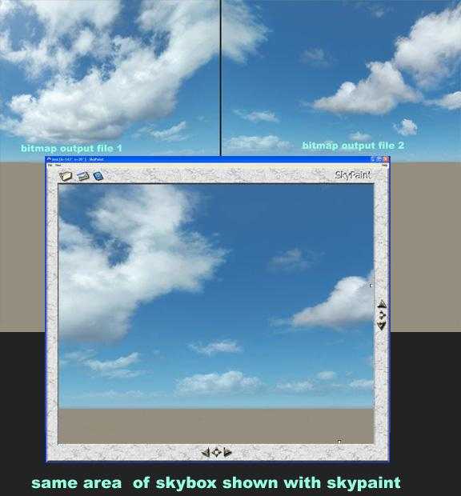
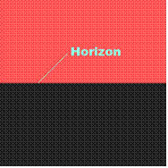
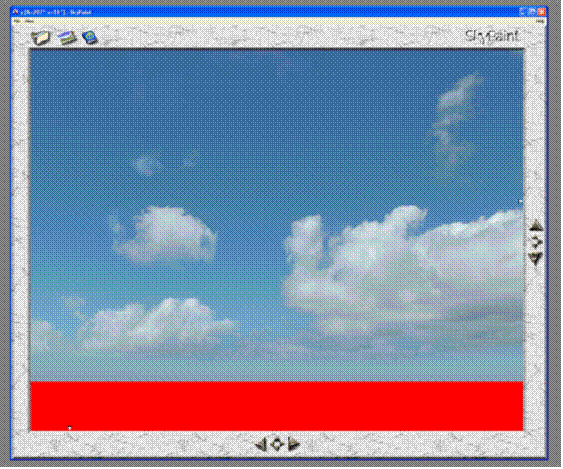

Обзор
После завершения этого урока вы сможете создать скайбокс с помощью SkyPaint, но сами текстуры все равно должны быть организованы определенным образом, чтобы их можно было правильно распознать в Sandbox.
Начало работы
Хотя создать скайбокс можно с помощью 3ds Max, в этом руководстве описывается только использование инструмента SkyPaint для создания скайбоксов.
Первым шагом является установка SkyPaint и его плагин Photoshop в нужном каталоге.
Требуется плагин Photoshop, поскольку SkyPaint сам по себе является не чем иным, как средством просмотра/проектором файлов изображений, которое экспортирует/обменивает все с Photoshop.
SkyPaint будет правильно проецировать плоскости на куб, растягивая и искажая плоскости, как линзу, так что невозможно будет обнаружить швы по краям коробки. Skybox показывает глобус, хотя на самом деле это всего лишь искаженный куб.
Чтобы получить представление о том, как это работает, посмотрите на следующую картинку:

Два верхних кадра — это 2D-плоскости/грани, экспортированные из SkyPaint. Как легко заметить, они искажены по внешним краям, особенно возле углов.
На нижнем экране показана та же область, что и на проецируемой кубической карте. Должно быть видно, что проекция помогла сделать эту кубическую карту не такой кубической, поэтому вы можете вращаться и не распознавать угловые области.
Большая проблема с системой, основанной на проецировании, заключается в том, что чем чаще изображение меняется и проецируется, тем более размытым оно становится. Итак, постарайтесь ограничить его использование и заканчивайте работу, избегая перемещения между SkyPaint и Photoshop. Если вам действительно нужно, вы можете избежать размытия, используя рабочие файлы большего размера (2048x2048 на лицо).
Подготовка кубической карты
Откройте SkyPaint и выберите файл/новый, чтобы создать новую карту неба. Он спросит вас о размере, и вы сможете назначить несколько предопределенных шаблонов.
Измените этот размер на 2048x2048 и нажмите войти (нет необходимости в template). Теперь выберите файл/сохранить как и сохраните его как файл targa (.tga) под легко запоминающимся именем.
SkyPaint теперь создает 6 разных изображений для каждой стороны куба с определенным именем. Как только он будет сохранен, закройте SkyPaint.
Теперь откройте Photoshop и создайте новое изображение высотой 1024 и шириной 2048. Залейте это изображение красным цветом. Теперь расширьте холст до высоты 2048 и закрасьте новую часть черным цветом.

Теперь у вас есть изображение, разделенное на две равные части. Линия, где соприкасаются обе части, — это горизонт и более или менее область, над которой вам следует начать работать.
Теперь сохраните это изображение для всех tga, в именах которых есть «_LF», «_FR», «_RT», «_BK». Теперь вы заменили 4 стороны (левую, переднюю, правую и заднюю) кубической карты. Теперь перекрасьте изображение в красный цвет и сохраните его как «_UP» для верхней части кубической карты.
Просто оставьте исходный файл "_DN.tga" таким, какой он есть, чтобы вы могли легко видеть углы во время просмотра скайбокса с помощью SkyPaint.
Теперь у вас есть идеальная основа для начала работы над своим скайбоксом.
Во время работы у вас должны одновременно работать Photoshop и SkyPaint.
Использование SkyPaint и Photoshop
Запустите SkyPaint и откройте сохраненный файл, и вы увидите скайбокс.

Если вы нажмете и удержите левую кнопку мыши в окне видового экрана, вы сможете перемещаться и менять вид. Кнопки со стрелками имеют те же функции.
Как только вы найдете область, над которой хотите работать, щелкните значок рисования (или нажмите клавишу ввода) в верхней части окна просмотра. Вам будет предложено указать размеры проекции. Введите 2048x2048 и продолжайте OK. SkyPaint перенесет данные растрового изображения в Photoshop. Появится окно Photoshop, и вы сможете продолжить работу там.
Теперь вы можете свободно рисовать, вставлять фотографии, применять градиенты и все остальные вещи, которые вам понадобятся для создания неба. Единственное ограничение заключается в том, что вам нужно свернуть все слои, как только вы закончите, потому что SkyPaint примет для передачи обратно только фоновый слой.
Вы можете перенести свою работу обратно в SkyPaint, запустив плагин SkyPaint с помощью меню фильтров Photoshop. Теперь растровые данные передаются обратно в SkyPaint, и вы можете увидеть результат.
Вам придется постоянно переключаться между обеими программами, меняя вид с помощью SkyPaint и рисуя Photoshop на целевой области.
Подготовка к использованию в Sandbox
Чтобы ваш скайбокс правильно распознавался в Sandbox, вам необходимо сохранить файлы определенным образом, см. Настройка текстур скайбокса для получения дополнительной информации.